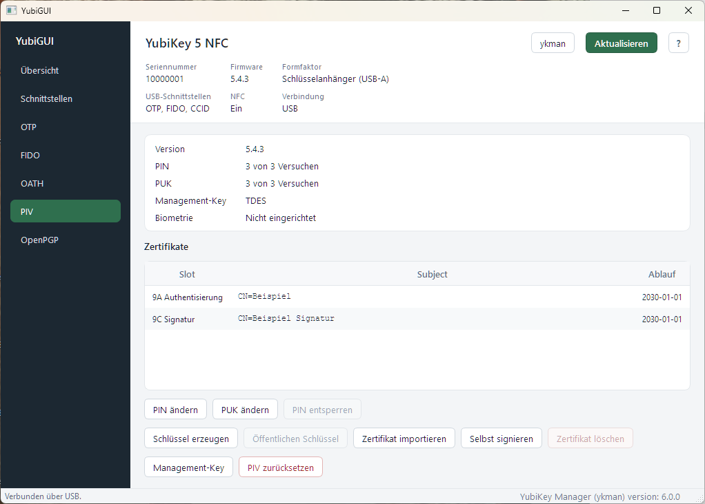

PIV
Oben stehen Version, die übrigen Versuche für PIN und PUK, der Management-Key und, wenn der Key sie hat, die Biometrie. ykman zeigt die Biometrie an und hat keinen Befehl zum Anlegen oder Löschen. Die Tabelle listet die Slots mit Subject und Ablaufdatum.

Die Slots heißen 9a Authentisierung, 9c Signatur, 9d Schlüsselverwaltung und 9e Kartenauthentisierung. PIN, PUK und Management-Key gehen an die Konsole von ykman. Ein Fehlversuch verbraucht einen Versuch. Ist die PIN gesperrt, entsperrt sie nur noch der PUK. Ist der PUK aufgebraucht, bleibt die PIV-Anwendung gesperrt, bis ein Reset sie leert.
PIN und PUK
- PIN ändern und PUK ändern setzen einen neuen Wert. Der Dialog nennt die übrigen Versuche.
- PIN entsperren nimmt den PUK, wenn die PIN gesperrt ist.
Schlüssel und Zertifikat
- Schlüssel erzeugen legt ein Schlüsselpaar im Slot an. Algorithmen sind ECC P-256, ECC P-384, RSA 2048, 3072 und 4096, Ed25519 und X25519. Die PIN-Regel ist Voreinstellung, einmal je Sitzung, jedes Mal oder nie. Die Berührung ist Voreinstellung, nie, immer oder kurz merken.
- Schlüssel importieren legt einen vorhandenen privaten Schlüssel in einen Slot. Die Datei bleibt auf dem Rechner. Eine Stub-Datei legt PIV nicht an. OpenSSH spricht den Slot später über PKCS#11 an.
- Öffentlichen Schlüssel schreibt PEM oder OpenSSH. Den privaten Schlüssel gibt der Key nicht heraus.
- Zertifikat exportieren schreibt PEM oder DER. Zertifikat importieren legt ein vorhandenes Zertifikat in den Slot. Zertifikatsanfrage schreibt eine Anfrage für eine CA. Selbst signieren stellt ein Zertifikat aus dem Schlüssel im Slot aus.
- Zertifikat löschen entfernt das Zertifikat des gewählten Slots.
Ein belegter Slot verlangt die Seriennummer. Werkseinstellungen kennzeichnet die Übersicht, sobald ykman sie ausweist. Die Felder werden nicht mit den Werkswerten gefüllt.
Management-Key und Reset
Management-Key wechselt den Schlüssel, mit dem die PIV-Verwaltung geschützt ist. Ein erzeugter Wert wird einmal angezeigt. Der Wechsel verlangt die Seriennummer.
PIV zurücksetzen leert die PIV-Anwendung und verlangt die Seriennummer. Der Reset ist gesperrt, solange FIDO eingerichtet ist.